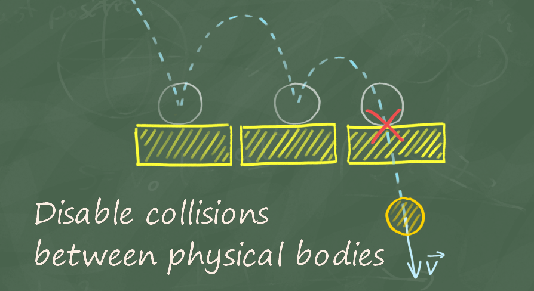

This plugin lets you disable collisions between the pairs of physical objects that you specify.
Video: Collision Disabler
Unreal Engine has several methods to disable collisions between objects.
Collision Disabler uses the last method. It gives you a very simple and easy way to disable collision between objects in the physics simulation.
Features:
To enable the plugin, do these steps:

This node disables collision between two primitive components that each have one PhysicalBody, for example a StaticMesh. Pins:

This node lets you disable collisions between a SkeletalMeshComponent and a PrimitiveComponent. You must specify the bones in the SkeletalMeshComponent for which the node disables collisions. Pins:

This node lets you disable collisions between two SkeletalMeshComponents. You must specify the bones in both components for which the node disables collisions.
Pins:

For each "Disable Collision" node, the "Collision Disabler" plugin has a related node that enables collisions. These nodes let you enable collisions again between the specified components or types of components. Thus they reverse the action of the "Disable Collision" nodes. Their parameters and functions are similar to those of the "Disable Collision" nodes. But these nodes enable collisions, and do not disable them.


This node checks if a given pair of bodies has a disabled collision.

This node gives you an easy way to list all the bones that have any physics representation.

This node returns a list of the physical bones that are below a given bone in the bone hierarchy.

It is easy to use the plugin in C++. All the functions above are in the UCollisionDisablerFunctionLibrary. Functions:
| Return | Name | Description |
|---|---|---|
| void | DisableCollision_SingleBodyVsSingleBody( UPrimitiveComponent* SingleBodyA, UPrimitiveComponent* SingleBodyB, float TimeToExpiration = -1) | Disables collision between two primitive components that each have one PhysicalBody, for example a StaticMesh. |
| void | DisableCollision_SkeletalVsSingleBody( USkeletalMeshComponent* SkeletalMesh, const TArray<FName> SkeletalMeshBones, UPrimitiveComponent* SingleBody, float TimeToExpiration = -1) | Disables collisions between a SkeletalMeshComponent and a PrimitiveComponent. You must specify the bones in the SkeletalMeshComponent for which the function disables collisions. |
| void | DisableCollision_SkeletalVsSkeletal( USkeletalMeshComponent* SkeletalMeshA, const TArray<FName> SkeletalMeshBonesA, USkeletalMeshComponent* SkeletalMeshB, const TArray<FName> SkeletalMeshBonesB, float TimeToExpiration = -1) | Disables collisions between two SkeletalMeshComponents. You must specify the bones in both components for which the function disables collisions. |
| void | EnableCollision_SingleBodyVsSingleBody( UPrimitiveComponent* SingleBodyA, UPrimitiveComponent* SingleBodyB) | Enables collision again between two primitive components that each have one PhysicalBody, for example a StaticMesh. |
| void | EnableCollision_SkeletalVsSingleBody( USkeletalMeshComponent* SkeletalMesh, const TArray<FName> SkeletalMeshBones, UPrimitiveComponent* SingleBody) | Enables collisions again between a SkeletalMeshComponent and a PrimitiveComponent. You must specify the bones in the SkeletalMeshComponent for which the function enables collisions. |
| void | EnableCollision_SkeletalVsSkeletal( USkeletalMeshComponent* SkeletalMeshA, const TArray<FName> SkeletalMeshBonesA, USkeletalMeshComponent* SkeletalMeshB, const TArray<FName> SkeletalMeshBonesB) | Enables collisions again between two SkeletalMeshComponents. You must specify the bones in both components for which the function enables collisions. |
| bool | IsCollisionDisabled( UPrimitiveComponent* ComponentA, UPrimitiveComponent* ComponentB, FName BoneNameA = NAME_None, FName BoneNameB = NAME_None) | Checks if a given pair of bodies has a disabled collision. |
| void | GatherAllPhysicalComponents( AActor* Actor, TArray<UPrimitiveComponent*>& OutComponents) | Returns a list of all the components in a given actor that have a physics representation. |
| void | GatherAllPhysicalBones( USkeletalMeshComponent* SkeletalMesh, TArray<FName>& OutBones) | Returns a list of all the bones that have any physics representation. |
| void | GatherAllPhysicalBonesFrom( USkeletalMeshComponent* SkeletalMesh, FName StartBone, bool bIncudeStartBone, TArray<FName>& OutBones) | Returns a list of the physical bones that are below a given bone in the bone hierarchy. |
Collision Disabler is very efficient. For objects that Collision Disabler does not manage, the performance cost is zero. For each collision with objects that have a disabled collision, the cost is very small and constant. Thus, only the number of objects that actually collide has an effect on performance.
The table below shows if Collision Disabler can disable collisions.
Static Geometry - Geometry that cannot move, for example buildings and rocks.
Kinematic Body - Objects that can move, but that do not have physics enabled, for example characters and projectiles.
Dynamic Body - Objects that the physics engine simulates (Simulate Physics is enabled), for example ragdolls.
| Body vs Body | Static Geometry | Kinematic Body | Dynamic Body |
|---|---|---|---|
| Static Geometry | N/A | No1 | Yes |
| Kinematic Body | No1 | No1 | Yes2 |
| Dynamic Body | Yes | Yes2 | Yes |
1 - Kinematic and Static bodies do not generate collisions (Hit Events), because the physics engine does not simulate them. For some object classes, for example characters or projectiles, you can use IgnoreActorWhenMoving or IgnoreComponentWhenMoving so that the objects are not blocked.
2 - The plugin disables the physical collision, but kinematic objects can still be blocked. In this case, also use the IgnoreActorWhenMoving or IgnoreComponentWhenMoving nodes together with DisableCollision.